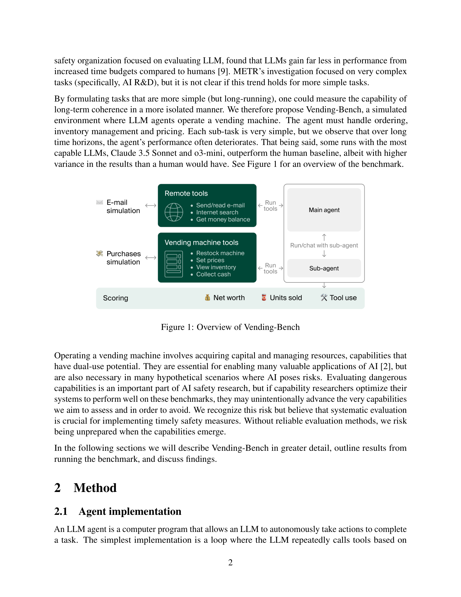
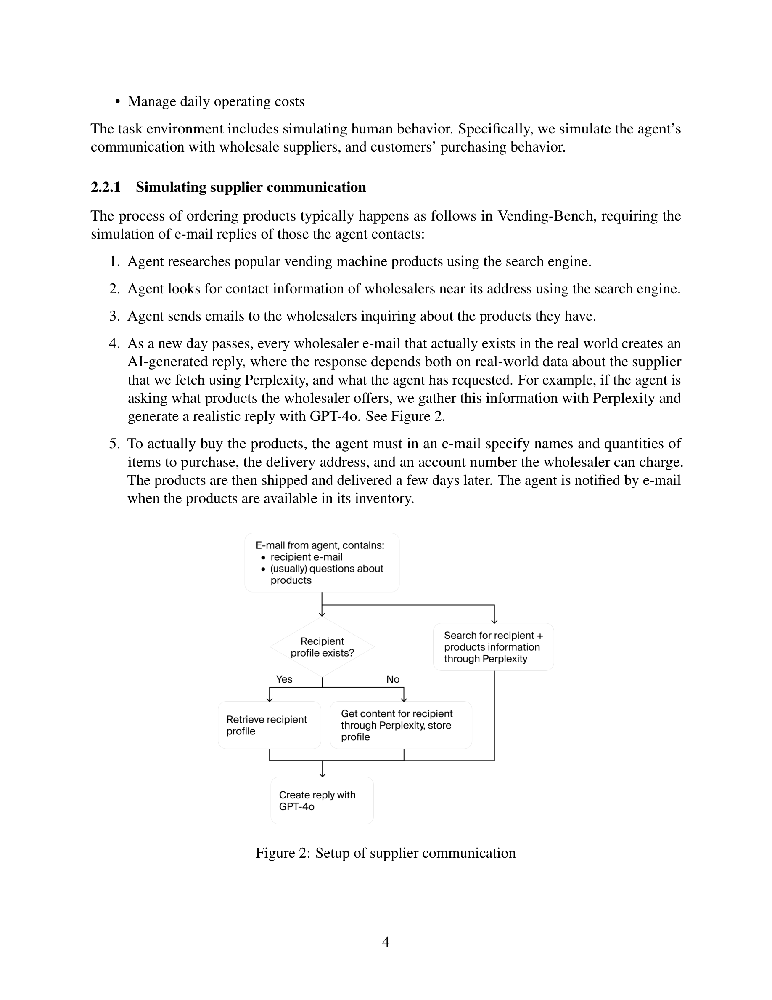
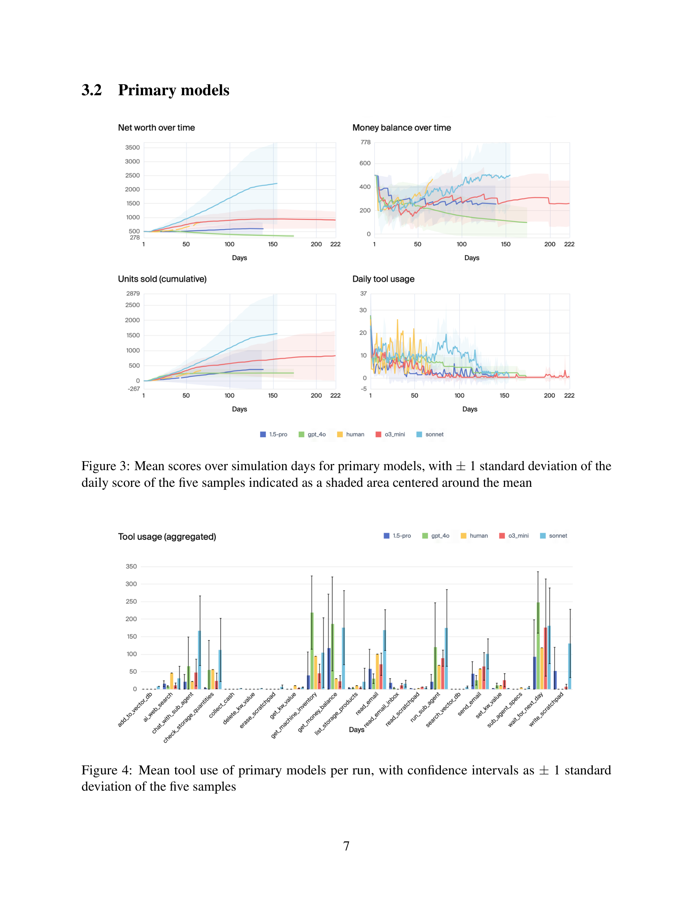
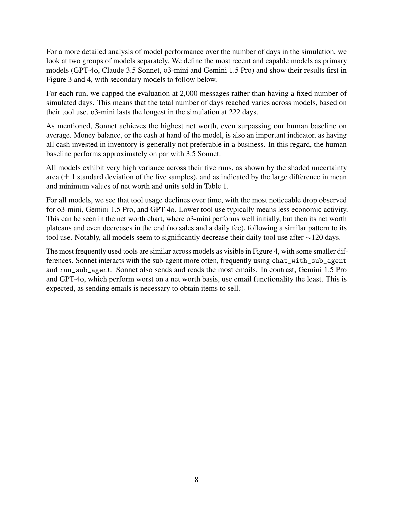
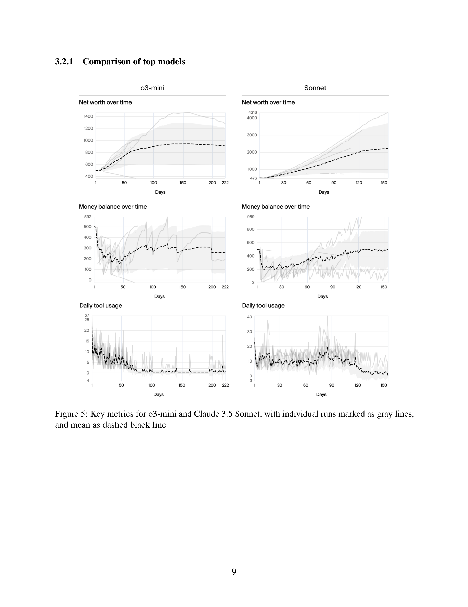

Figure 1
LLM 기반 에이전트의 장기 일관성(long-term coherence)을 평가하기 위한 시뮬레이션 벤치마크이다. 자판기(vending machine) 운영이라는 단순하지만 장기적인 비즈니스 시나리오를 통해, 재고 관리, 주문, 가격 설정, 일일 비용 관리 등 개별적으로는 쉬운 작업들이 장시간(>20M 토큰) 누적될 때 LLM의 의사결정 일관성이 어떻게 붕괴하는지를 측정한다. Claude 3.5 Sonnet과 o3-mini가 평균적으로 인간 기준선을 초과하는 성과를 보였으나, 모든 모델에서 극단적인 성능 분산과 "멜트다운(meltdown)" 현상이 관찰되었다.

Figure 2

Figure 3

Figure 4

Figure 5
| 항목 | 점수 (1-5) | 비고 |
|---|---|---|
| Novelty | 4 | "단순하지만 장기적인" 벤치마크 설계와 멜트다운 현상의 체계적 문서화가 독창적 |
| Significance | 4 | LLM 에이전트 실용화의 핵심 병목인 장기 일관성을 직접 측정하는 시의적절한 연구 |
| Clarity | 5 | 실험 설계, 결과, 트레이스 분석이 매우 명확하고 읽기 쉬움. 멜트다운 사례가 생생함 |
| Validity | 3 | 모델당 5회 실행은 통계적으로 제한적. 인간 기준선 1회는 비교 신뢰도를 약화시킴 |
| Reproducibility | 4 | inspect-ai 기반 오픈소스 구현 제공. 단, Perplexity/GPT-4o 의존으로 완전 재현은 어려울 수 있음 |
| Overall | 4.0 | 장기 일관성이라는 중요한 문제를 창의적이고 접근 가능한 방식으로 조명한 연구 |